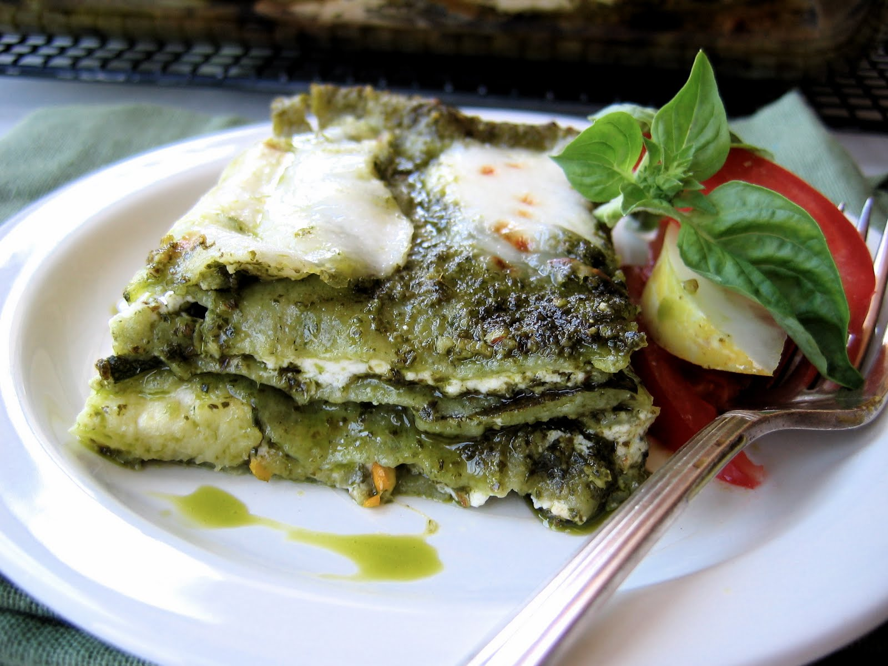

Pesto Lasagna

A delicious pesto lasagna that is sure to hit every comfort food point in your soul.
This pesto lasagna is sure to be a hit with all your guest the flavor of the pesto with cheese this dish is paired great with some wine and good company!
This dish will be the talk of the town after every bite of gooey deliciousness. Come grab a plate and enjoy!
Ingredients
1 (16 ounce) package lasagna noodles
1 (16 ounce) package frozen chopped spinach, thawed
¼ teaspoon ground black pepper
2 cups mozzarella cheese, shredded
9 ounces Alfredo-style pasta sauce
¼ cup grated Parmesan cheese
Steps
Preheat the oven to 350 degrees F (175 degrees C).
Bring a large pot of lightly salted water to a boil. Add lasagna and cook for 8 to 10 minutes or until al dente; drain.
In large skillet over medium heat, sauté onion in olive oil until tender. Stir in spinach; remove from heat and stir in pesto.
In a large bowl mix ricotta cheese, egg, salt, pepper, and nutmeg.
In a 3-quart greased baking dish, layer noodles then spinach mixture, followed by ricotta mixture. Sprinkle with mozzarella cheese. Repeat the layers ending with noodles on top. Spread Alfredo sauce on top of noodles and sprinkle with Parmesan cheese.
Cover with foil and bake in the preheated oven for 45 to 55 minutes.